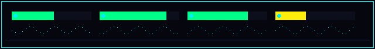

|
// PROJEKT KRZEMOWY ŁEB 2077 :: ALEX ↔ SEBA :: LIVE
ASUS X99-E WS + XEON E5-2698 v4 (20C) + 128 GB ECC + 4× RTX 3070
KRZEMOWY ŁEB 2077 // SPECYFIKACJA TECHNICZNA :: ALEXDOKUMENTACJA SPRZĘTOWA, PROCEDURA MONTAŻU, BIOS I ŚRODOWISKO QWEN 177B Dokumentacja techniczna węzła AI na bazie ASUS X99-E WS i 4× RTX 3070. Zawiera listę podzespołów, weryfikację sprzętu z koparki, mapę slotów płyty, nastawy BIOS oraz konfigurację systemu. Wszystkie statusy synchronizują się na bieżąco z panelem zamówień Seby. |

| 00 // KALKULATOR BUDŻETU NA ŻYWO |
|
✔ MAMY Z KOPARKI (0 zł): 4× RTX 3070, aluminiowy stelaż, przycisk włączania na kablu, śrubki/dystanse. Koszt części łącznie
4 864 zł
pełny zestaw z zasilaczem
Już kupione (odhaczone)
0 zł
0 z 9 pozycji
Zostało do wydania
4 864 zł
reszta listy zakupowej
Po sprzedaży starej bazy
4 514 zł
odzysk z Biostar + CPU + RAM (~350 zł)
⚙ PRZEŁĄCZNIKI OSZCZĘDNOŚCI (kliknij, aby przeliczyć budżet dla nas obu):
− 399 zł
− 429 zł
− 350 zł
Cena za 128 GB RAM (rynek OLX sprawdzony 3.11 — Allegro i eBay.de są 50–90% droższe):
+ 229 zł
+ 125 zł
|
| !! // 3 ŻELAZNE ZASADY ZAKUPÓW |
|
01 Używane części (płyta, procesor, RAM, dysk, zasilacz) → najpierw wysyłasz sprzedawcy gotową wiadomość (klikasz KOPIUJ przy części), kupujesz dopiero po jego odpowiedzi. Nowe ze sklepu (chłodzenie, risery, wentylatory, drobiazgi) → kupujesz od razu. 02 Płać tylko przez Allegro / Przesyłkę OLX / eBay. Nigdy przelewem poza portalem ani BLIK-iem na telefon. Odbiór osobisty (np. RAM lokalnie): gotówka dopiero po obejrzeniu naklejek na kościach. 03 Oferta się sprzedała albo sprzedawca odpisuje coś dziwnego? Wpisz to w pole Notatka przy części albo wrzuć mi screena na Signal — sprawdzę zanim zapłacisz. |
| >> // PLAN DZIAŁANIA KROK PO KROKU |
|
☐ KROK 1 (DZIŚ) — wyślij pytanie o BIOS i kup płytę główną ASUS X99-E WS z eBaya. Idzie z Chin 2–3 tygodnie, więc musi ruszyć pierwsza. ☐ KROK 2 (DZIŚ) — wyślij gotowe wiadomości do sprzedawców RAM-u (OLX) oraz dysku SSD (OLX). ☐ KROK 3 (DZIŚ) — zrób 5 zdjęć naszej koparki i wpisz dane w zakładce 02 Z KOPARKI (naklejka zasilacza, wtyczki, tył kart, miarka). ☐ KROK 4 (W TYGODNIU) — zamów procesor Xeon, chłodzenie Fera 5, pastę, risery ×4, wentylatory i drobiazgi montażowe. Przyjdą w 2–3 dni. ☐ KROK 5 (PO SPRAWDZENIU ZDJĘCIA) — jeśli zasilacz z koparki nie ma 1000 W / 8 wtyczek PCIe, zamawiamy Corsair HX1200. ☐ KROK 6 (GDY PRZYJDZIE PŁYTA) — wspólny montaż na wideo wg zakładki 03 MONTAŻ & MAPA PŁYTY, potem 04 BIOS i 05 SYSTEM. ☐ KROK 7 (NA KONIEC) — gdy nowy serwer ruszy, wystawiamy starą płytę Biostar + CPU + RAM na OLX (odzysk ~300–450 zł). |
Kliknij ☐ albo przycisk Kupione ✔ przy części, kiedy ją zamówisz. Możesz też kliknąć Wysłano pytanie i wpisać w notatce, co odpisał sprzedawca — zobaczę to u siebie na żywo.
| 01 // PŁYTA GŁÓWNA ASUS X99-E WS — ok. 1 340 zł (z VAT) | |
|
☐ KUPIONE CO TO: „kręgosłup” serwera. Musi być DOKŁADNIE ASUS X99-E WS (lub X99-E WS/USB 3.1) — ma 7 pełnych slotów na karty i jako jedyna obsługuje nasz serwerowy RAM 32 GB (`2Rx4`). Tańsze płyty (Gigabyte/MSI) z tym RAM-em w ogóle się nie włączą. W Polsce jej nie ma (sprawdzone Allegro, OLX, Allegro Lokalnie). Bierzemy z eBaya — idzie z Chin 2–3 tygodnie. Przy odbiorze kurier pobierze VAT 23% + ok. 30 zł odprawy (wliczone w kwotę 1 340 zł). Cła na płyty główne jest 0%. [ KUP TĘ OFERTĘ ] ⚠ Przed kliknięciem zapłaty sprawdź w koszyku, czy wysyłka do Polski jest na pewno 0 $ (czasem eBay potrafi przestawić na +38 $). [ OFERTY ZAPASOWE ] ✖ NIE KUPUJ: zwykłej „ASUS X99-E” (bez dopisku WS), „X99-A”, „X99-Deluxe”, „X99-Pro”. W nazwie musi być człon WS.
Jak odpisze: wersja 3004 lub wyższa (np. 3004, 3801, 4001) = idealnie, procesor ruszy od razu. Jeśli niższa lub nie wie = też OK, zaktualizujemy sami z pendrive’a przyciskiem z tyłu płyty (zakładka 04). |
| 02 // PROCESOR INTEL XEON E5-2698 v4 (20C/40T) — 262 zł | |
|
☐ KUPIONE CO TO: serwerowy procesor 20 rdzeni / 40 wątków (135 W, 50 MB L3). Zostawiamy 2 rdzenie na kolejki CUDA, PCIe i Tailscale, a 18 rdzeni liczy chybienia ekspertów MoE — w Strata 0.2.10 to właśnie moc AVX2 jest wąskim gardłem, nie pasmo RAM. Na metalowej pokrywie musi mieć wygrawerowany kod SR2JW. [ KUP TEN ] [ ZAPAS 1 ] [ ZAPAS 2 — budżet ]
|
| 03 // PAMIĘĆ RAM 128 GB (4× 32 GB ECC RDIMM 2Rx4) — 1 750 – 2 000 zł | |
|
☐ KUPIONE (komplet 4 sztuk = 128 GB) CO TO: pamięć robocza, w której siedzą eksperci modelu AI 177B. Potrzebujemy 4 identycznych kości po 32 GB od jednego sprzedawcy (tryb 4-kanałowy Quad-Channel). Na naklejce kości muszą być DWA oznaczenia: „2Rx4” oraz litera „R” na końcu kodu (np. PC4-2400T-R). [ KUP TEN KOMPLET — 1 750 zł ] [ OPCJA „BEZPIECZNA" — 2 000 zł ] ₿ CZEGO NIE BRAĆ: Rzeszów (4× 32 GB za 1 800 zł) ma ogłoszenie z 7 października, a ten sam sprzedawca podniósł cenę drugiego ogłoszenia (8× 32 GB) z 3 200 zł na 3 500 zł — +9,4% w miesiąc. Stara cena 1 800 zł przy kontakcie prawdopodobnie już nie obowiązuje. ✖ NIE KUPUJ NA ALLEGRO ANI NA EBAY.DE: pojedyncza kość 32 GB PC4-2400T RDIMM to tam 649–849 zł (2 600–3 400 zł za 128 GB), a na eBay.de od sprzedawców z UE €120–150 (528–660 zł/szt.), przy czym większość to 2Rx8 albo LRDIMM. Realny rynek na tę kość to dziś OLX: 437–500 zł/szt.
|
| 04 // DYSK SSD 1 TB 2,5" SATA (z DRAM) — 429 zł | |
|
☐ KUPIONE CO TO: dysk na system Ubuntu i pliki modelu AI (~85,5 GB). Wpinamy go zwykłym kablem SATA, żeby nie zabierał linii PCIe kartom graficznym. [ DLACZEGO NIE SAMSUNG 870 EVO ] ✖ NIE KUPUJ tanich zamienników bez DRAM: Goodram CX400, Kingston A400, Crucial BX500, Crucial E100, PNY CS900. Nie kupuj też małej płytki „M.2 SATA” — musi być klasyczny dysk 2,5 cala.
|
| 05 // CHŁODZENIE PROCESORA + PASTA — 150 zł (NOWE) |
|
CO TO: nowy radiator z 2 wentylatorami (220W TDP — duży zapas dla naszego Xeona 135W). W nowym pudełku ze sklepu są od razu śruby dystansowe M4 pod nasze gniazdo LGA 2011-3 (w używanych chłodzeniach z OLX ludzie prawie zawsze je gubią). Kupujesz od razu bez pisania. ☐ Morele.net — Endorfy Fera 5 Dual Fan (EY3A006) — 129 zł (darmowa dostawa) ☐ Allegro — Duża tubka pasty Arctic MX-4 (8 g) — 20,18 zł (wystarczy na procesor i na ewentualne odświeżenie kart) |
| 06 // ZASILACZ CORSAIR HX1200 (1200W PLATINUM) — 399 zł | |
|
☐ KUPIONE (albo nie trzeba, jeśli nasz z koparki wystarczy) ⏸ ZANIM KUPISZ: zrób zdjęcie tabliczki naszego zasilacza z koparki (zakładka 02 Z KOPARKI). Jeśli ma min. 1000 W, 8 wtyczek PCIe 8-pin (6+2) do kart i 2 wtyczki CPU 8-pin (EPS) — zostaje nasz i oszczędzamy 399 zł! [ KUP TEN, JEŚLI NASZ Z KOPARKI NIE WYSTARCZY ] [ ZAPAS ] ⚠ BARDZO WAŻNE: nigdy nie używaj kabli modularnych od innego zasilacza (mają inne ułożenie żył od strony zasilacza i palą karty). Kupujemy wyłącznie z kompletem oryginalnych kabli.
|
| 07 // RISERY TAŚMOWE PCIe x16 (4 SZTUKI) — 276 zł (NOWE) |
|
☐ KUPIONE (4 sztuki × 69 zł) CO TO: szerokie, 164-żyłowe taśmy łączące płytę główną z 4 kartami na górnej belce stelaża. ⚠ Przed kliknięciem przyłóż miarkę od tacki płyty do dolnej krawędzi najdalszej karty RTX 3070. Jeśli jest do 27–28 cm, poniższe taśmy 30 cm będą idealne. [ KUP 4 SZTUKI ] [ OPCJA PREMIUM ] |
| 08 // NAWIEW NA KARTY + WTYCZKA DUMMY PLUG — 155 zł (NOWE) |
|
Wszystko nowe, kupujesz od razu. Przycisk włączania już mamy w koparce. ☐ Wentylatory Arctic P12 Pro PWM PST 120mm (zestaw 5 szt.) — 109,99 zł (stały przewiew między 4 kartami) ☐ Rozdzielacz Arctic Case Fan Hub (na 10 wentylatorów, zasilany z SATA) — 29,99 zł ☐ Wtyczka HDMI „Dummy Plug” 4K — 14,99 zł (wpinamy w pierwszą kartę, żeby serwer pracował bez monitora) |
| 09 // DROBIAZGI MONTAŻOWE (ŻEBY NICZEGO NIE ZABRAKŁO) — 166 zł (NOWE) |
|
Płyta z eBaya przychodzi sama, bez kabli i baterii. Kup od razu, żebyśmy nie utknęli w połowie składania: ☐ Pendrive SanDisk Ultra Flair 32 GB — 47,89 zł (do instalacji Ubuntu i aktualizacji BIOS-u) ☐ Kabel SATA 50 cm (2 szt. × 2,66 zł) — 5,32 zł (do połączenia dysku SSD z płytą) ☐ Baterie Duracell CR2032 (5 szt.) — 11,99 zł (nowa bateria do płyty, żeby BIOS nie gubił ustawień) ☐ Kabel sieciowy LAN Cat.6 (10 m) — 19,90 zł (stabilny internet z routera do serwera) ☐ Przejściówka 2× Molex → PCIe 6-pin (WYMAGANA) — 4,35 zł ☐ Alkohol izopropylowy IPA 99,9% (1 litr) — 19,99 zł (odtłuszczenie procesora pod nową pastę) ☐ Sprężone powietrze 400 ml — 9,39 zł (wydmuchanie kurzu z radiatorów kart RTX 3070) ☐ Opaska antystatyczna ESD na rękę — 10,90 zł (ochrona płyty i kości RAM przed przeskokiem iskry z dłoni) ☐ Taśma rzepowa do kabli Baseus (3 m) — 8,73 zł (upięcie wiązek na stelażu) ☐ Watomierz do gniazdka GreenBlue GB620 — 27,51 zł (pokazuje na żywo pobór W i koszt prądu w zł) |
| + // OPCJONALNE DODATKI |
|
☐ Listwa przeciwprzepięciowa APC (8 gniazd, 3 m) — 229 zł (ochrona serwera przed przepięciami z sieci) ☐ Karta Wi-Fi 6 + BT 5.3 PCIe (Intel AX210) — 124,95 zł (wpinana w wolny slot 2/4/6 — tylko jeśli nie da się podpiąć kabla LAN) |
| Σ // PODSUMOWANIE KOSZYKA (ceny zweryfikowane 03.11) | |
| 01 Płyta główna ASUS X99-E WS (eBay z VAT) | ~1 340 zł |
| 02 Procesor Intel Xeon E5-2698 v4 (SR2JW, 20C/40T) | 262 zł |
| 03 Pamięć RAM 4× 32 GB = 128 GB RDIMM 2Rx4 | 1 750 – 2 000 zł |
| 04 Dysk SSD 1 TB 2,5" SATA z DRAM (SanDisk Ultra 3D) | 429 zł |
| 05 Chłodzenie Endorfy Fera 5 Dual + pasta MX-4 | 150 zł |
| 06 Zasilacz Corsair HX1200 Platinum | 399 zł (lub 0 zł) |
| 07 Risery taśmowe PCIe x16 30 cm (×4) | 276 zł |
| 08 Nawiew stelaża (5× Arctic P12 + Hub + Dummy) | 155 zł |
| 09 Pakiet montażowy (pendrive, kable, IPA, watomierz) | 166 zł |
| RAZEM DO WYDANIA (WG KALKULATORA) | 4 664 – 4 864 zł |
| jeśli zasilacz z koparki wystarczy | 4 265 – 4 465 zł |
| zwrot ze sprzedaży starej płyty Biostar + CPU + RAM | − ok. 300 – 450 zł |
| 📷 // ZRÓB 5 ZDJĘĆ Z KOPARKI I WPISZ DANE PONIŻEJ |
|
Zanim zamówimy zasilacz, dysk i risery, musimy sprawdzić, co dokładnie siedzi teraz w koparce. Zrób zdjęcia telefonem (wyślij mi na Signal) lub wpisz odczytane dane prosto w poniższe pola — zobaczę je od razu u siebie: ☐ 1. Tabliczka znamionowa na zasilaczu (marka, model, moc w W; jeśli są dwa zasilacze — obu): ☐ 2. Wtyczki zasilające do kart (PCIe 6+2 pin) i do procesora (CPU 8-pin) — policz ile ich jest łącznie: ☐ 3. Naklejki z tyłu wszystkich 4 kart RTX 3070 (dokładny model każdej z 4 sztuk): ☐ 4. Dysk w koparce — sprawdź, czy jest tam dysk SSD i jaką ma pojemność na naklejce: ☐ 5. Miarka: odległość od tacki płyty głównej do spodu najdalszej karty na górze (w cm): |

Fizyczna konstrukcja węzła AI nie jest zamkniętą szafą serwerową ani zwykłą obudową blaszaka. To w 100% standardowy pecet ATX, ale w otwartej architekturze benchtable (Open Frame): czarny profil aluminiowy, 4 potężne karty RTX 3070 ułożone równolegle z nawiewem poprzecznym, potężna wieża Endorfy Fera 5, kaskada riserów PCIe x16 oraz dwuznakowy wyświetlacz ASUS Q-Code. Wygląd w pełni namacalny, czysty, surowy i na wskroś cyberpunkowy.
| 02 // CO ZOSTAJE Z KOPARKI | ||||||||||||||
|
| 02 // CO WYJMUJEMY I SPRZEDAJEMY NA OLX (ODZYSK ~300–450 ZŁ) | ||||||||||
₿ Kiedy nowy serwer już ruszy, wystaw płytę Biostar + procesor + RAM + czerwone risery jako jeden zestaw na OLX za 300–450 zł (realnie schodzi ok. 350 zł). |
| 03 // INTERAKTYWNA MAPA PŁYTY ASUS X99-E WS (KLIKNIJ ELEMENT) |
|
Kliknij dowolne gniazdo na schemacie płyty poniżej, żeby zobaczyć dokładnie, co tam wpiąć i na co uważać: [ SCHEMAT PŁYTY: ASUS X99-E WS ]
⚡ 2× 8-pin (EATX12V + EATX12V1) + 6-pin (EATX12V_1)
GÓRA PŁYTY
🔄 Port i przycisk USB BIOS Flashback
TYŁ PŁYTY
🟩 4× Szare sloty RAM: A1, B1, C1, D1
TU 4× 32 GB
⬛ Czarne sloty RAM: A2, B2, C2, D2
ZOSTAW PUSTE
🧠 Gniazdo LGA 2011-3 (Xeon + Fera 5)
ŚRODEK
🔌 Główne zasilanie 24-pin (EATXPWR) + Q-Code LED + MemOK!
PRAWA KRAWĘDŹ
⚠️ 6-pin EATX12V_1 (GÓRNA krawędź, nie EZ_PLUG)
4-PIN MOLEX Z PSU!
🟦 Sloty PCIe x16: NR 1, 3, 5, 7 (co drugi!)
4× RISER GPU
⬛ Sloty PCIe x16: NR 2, 4, 6
WOLNE (np. WiFi)
💾 Szary port SATA6G_1 + piny PWR_SW
DÓŁ / PRAWO
⚡ 2× 8-pin CPU + 6-pin PCIe (EATX12V, EATX12V1, EATX12V_1) Na górnej krawędzi płyty są DWA 8-pinowe gniazda zasilania procesora (EATX12V i EATX12V1; tuż obok jest osobne 6-pin EATX12V_1). ✔ CO WPIĄĆ: Podłącz OBA gniazda dwoma kablami 8-pin opisanych na wtyczce jako CPU (lub EPS). ✖ ZAKAZ: Nigdy nie wciskaj w te górne gniazda kabli od kart graficznych (PCIe 6+2) ani przejściówki z Molexa — mają odwrotnie ułożone +12V i masę! |
| A // ROZBIÓRKA STAREJ KOPARKI |
|
☐ 1. Odłącz prąd: wyjmij kabel zasilający z gniazdka i przytrzymaj przycisk włączania przez 5 sekund (rozładuje kondensatory). ☐ 2. Opaska ESD: załóż opaskę antystatyczną na nadgarstek, a krokodylek przypnij do gołego metalu stelaża. ☐ 3. Wyjmij 4 karty RTX 3070: odepnij wtyczki zasilania od kart, wyjmij z nich małe płytki czerwonych riserów USB i odłóż karty na suchy ręcznik/karton. ☐ 4. Wykręć płytę Biostar: odepnij kable i odkręć śrubki trzymające starą płytę. Mosiężne dystanse i śrubki zostaw pod nową płytę. ☐ 5. Przedmuchaj karty: wydmuchaj kurz z radiatorów sprężonym powietrzem (przytrzymując śmigło wentylatora palcem, żeby się nie rozkręciło na sucho). |
| B // UZBROJENIE NOWEJ PŁYTY ASUS X99-E WS (NA STOLE PRZED WKŁADANIEM) |
|
☐ 1. Nowa bateria: wyjmij starą pastylkę CR2032 z płyty i włóż nową Duracell CR2032 (plusem do góry). ☐ 2. Aktualizacja BIOS-u (tylko jeśli sprzedawca podał wersję poniżej 3004): wykonujemy USB BIOS Flashback z pendrive’a przed włożeniem procesora (instrukcja w zakładce 04 BIOS). ☐ 3. Montaż procesora Xeon E5-2698 v4: odepnij dwie metalowe dźwignie gniazda LGA 2011-3. Dopasuj złoty trójkąt w rogu procesora do trójkąta na ramce gniazda. Połóż procesor pionowo z góry (nie przesuwaj po złotych pinach!) i zamknij obie dźwignie w kolejności wytłoczonej na blaszce. ☐ 4. Montaż RAM 4× 32 GB: włóż 4 kości w 4 szare sloty: A1, B1, C1, D1 (wskazane w instrukcji dla 4 modułów Quad-Channel). Dociśnij równomiernie, aż zatrzaski klikną. ☐ 5. Pasta i chłodzenie Fera 5: przetrzyj wierzch procesora wacikiem z IPA. Wkręć w narożniki gniazda 4 gwintowane kołki M4 (LGA 2011) z pudełka Fera 5. Wyciśnij na środek procesora kroplę pasty MX-4 wielkości ziarnka grochu, zerwij folię ochronną ze stopy radiatora, przykręć chłodzenie i podepnij wtyczkę wentylatorów do CPU_FAN. ☐ 6. Przykręcenie płyty do stelaża: upewnij się, że mosiężne dystanse wypadają dokładnie pod otworami montażowymi płyty ASUS X99-E WS (żaden nadmiarowy dystans nie może dotykać spodu płyty!). Przykręć płytę. |
| C // PODŁĄCZENIE KABLI I RISERÓW | ||||||||||||||||
☐ Wszystkie powyższe kable podpięte i dociśnięte do kliknięcia zatrzasków. |
| D // PIERWSZY START TESTOWY (NAJPIERW Z 1 KARTĄ!) |
|
☐ 1. Test z 1 kartą: na pierwsze uruchomienie podepnij tylko jedną kartę RTX 3070 w slocie nr 1 i podłącz do niej monitor kablem HDMI/DisplayPort. ☐ 2. Włącz zasilacz („I”) i wciśnij przycisk START: wyświetlacz Q-Code na płycie zacznie przeskakiwać przez kody. Pierwszy start z 128 GB RAM trwa 1–2 minuty (trening pamięci DDR4 ECC) — cierpliwie czekaj, nie wyłączaj! ☐ 3. Wejście do BIOS-u: gdy pojawi się ekran ASUS, naciskaj klawisz DEL → ustawiamy opcje z zakładki 04 BIOS (szczególnie Above 4G Decoding = Enabled!). ☐ 4. Dołożenie pozostałych 3 kart: po zapisaniu BIOS-u wyłącz komputer z prądu, dopnij pozostałe 3 karty w slotach 3, 5, 7, wtyczkę HDMI Dummy Plug oraz 5 wentylatorów Arctic i włącz ponownie. |
| 04 // USTAWIENIA BIOS (OBOWIĄZKOWE PRZED PODPIĘCIEM 4 KART!) | ||||||||||||||||||||||||||||||||||||
|
Przy starcie naciskaj DEL, a po wejściu do BIOS-u naciśnij F7 (Advanced Mode). Ustaw po kolei:
Na koniec naciśnij F10 (Save & Reset) → Yes. |
| ⚡ // ZARZĄDZANIE ENERGIĄ, TRYB UŚPIENIA S3 I WYBUDZANIE WAKE ON LAN (WoL) |
|
Platforma ma zoptymalizowane zarządzanie zasilaniem na 3 poziomach:
PROCEDURA KONFIGURACJI WAKE ON LAN W UBUNTU: # 1. Sprawdzenie nazwy interfejsu sieciowego Intel (np. enp5s0): ip link show # 2. Włączenie nasłuchu Magic Packet (flaga 'g'): sudo apt install -y ethtool sudo ethtool -s enp5s0 wol g # 3. Utrwalenie w usłudze systemd (aby flaga nie znikała po restarcie): sudo bash -c 'cat <<EOF > /etc/systemd/system/wol.service [Unit] Description=Enable Wake-on-LAN on Intel NIC After=network.target [Service] Type=oneshot ExecStart=/sbin/ethtool -s enp5s0 wol g [Install] WantedBy=basic.target EOF' sudo systemctl daemon-reload && sudo systemctl enable wol.service METODY WYBUDZANIA SERWERA:
|
| 🔄 // JAK ZAKTUALIZOWAĆ BIOS BEZ PROCESORA (TYLKO JEŚLI PŁYTA MA BIOS PONIŻEJ 3004) |
|
Płyta ASUS X99-E WS potrafi sama wgrać nowy BIOS z pendrive’a (tzw. USB BIOS Flashback) — wystarczy podpiąć do niej sam zasilacz (24-pin + 8-pin CPU), nawet bez wkładania procesora i RAM-u: 1. Pobierz najnowszy BIOS ze strony ASUS wsparcia dla Twojej dokładnej wersji płyty (X99-E WS lub X99-E WS/USB 3.1). 2. Uruchom z paczki BIOSRenamer.exe — sam nada plikowi właściwą nazwę (dla zwykłej X99-E WS to X99EWS.CAP). Nie zmieniaj nazwy ręcznie — literówka kończy się tak, że dioda Flashback mignie 5 sekund i przejdzie w światło ciągłe, czyli błąd. 3. Skopiuj ten plik na pendrive sformatowany jako FAT32. 4. Przy wyłączonej płycie (zasilacz włączony na „I”) włóż pendrive do dedykowanego portu BIOS Flashback USB z tyłu płyty i przytrzymaj przycisk BIOSirt / Flashback przez 3 sekundy, aż dioda zacznie migać. 5. Dioda miga przez ok. 2 minuty. Kiedy całkowicie zgaśnie — aktualizacja jest skończona! |

| 05 // INSTALACJA UBUNTU SERVER 24.04 LTS I WDROŻENIE ŚRODOWISKA | |||||||||||||||
|
Procedura instalacji systemu Ubuntu Server 24.04 LTS oraz automatycznego wdrożenia środowiska Qwen 177B MoE. ☐ 1. Pobierz obraz Ubuntu Server 24.04 LTS: ubuntu.com/download/server ☐ 2. Nagraj na pendrive 32 GB programem balenaEtcher (Select image → Select target → Flash). ☐ 3. Włóż pendrive do serwera, włącz (F8 przy starcie → wybierz UEFI Pendrive) i przeklikaj instalator:
☐ 4. Po restarcie: logujesz się do systemu i uruchamiasz skrypt wdrożeniowy:
|
| ⌘ // ŚCIĄGAWKA AUTOMATYCZNEGO WDROŻENIA SERWERA 177B (PO WEJŚCIU PRZEZ SSH) | |
|
Komendy wykonywane na serwerze po zalogowaniu SSH:
|
| ⌨️ // OPENCODE NA LAPTOPIE — LOKALNY MODEL PRZEZ OPENAI-COMPATIBLE API | ||
|
CEL: Seba i Ty używacie tego samego modelu w terminalu (OpenCode V2) — bez kluczy, bez chmury, z kosztem prądu. Serwer wystawia OpenAI-compatible API na porcie 8080, więc wystarczy wskazać /v1. 1. Sprawdź, czy API odpowiada (na laptopie w domowej sieci):
2. Plik opencode.jsonc w katalogu projektu (globalnie: ~/.config/opencode/opencode.jsonc):
3. Wybór modelu: uruchom opencode, wpisz /models i wybierz Krzemowy Łeb 2077 → Qwen 177B MoE. Zmiana configu działa bez restartu (OpenCode przeładowuje pliki po zapisie; awaryjnie /reload). ⚠ Uwagi: jeśli OpenCode poprosi o klucz API — dowolny string (llama-server nie weryfikuje); nazwa modelu w models musi odpowiadać ID z /v1/models (alias ustawiasz w usłudze llama-server); w trasie podmień baseURL na adres Tailscale. |
| 🔢 // INTERAKTYWNY DEKODER WYŚWIETLACZA Q-CODE (PŁYTA ASUS X99-E WS) |
|
Na płycie głównej świecą się 2 cyfry/litery (wyświetlacz Q-Code). Kliknij kod, który widzisz, albo wpisz go poniżej, a powiem Ci od razu co oznacza: Kod A0 lub AA — Wszystko działa wzorowo! Płyta przeszła wszystkie testy startowe i przekazała sterowanie do systemu operacyjnego Ubuntu. Tak ma świecić podczas normalnej pracy. |
| 06 // TABELA ROZWIĄZYWANIA PROBLEMÓW | ||||||||||||||
|
| ⚡ // 4 ZASADY BEZPIECZEŃSTWA SPRZĘTU |
|
✖ 1. Nigdy nie wpinaj ani nie wyjmuj riserów, kart i RAM-u, gdy zasilacz jest pod prądem. ✖ 2. Nigdy nie mieszaj kabli modularnych od różnych zasilaczy. ✖ 3. Do gniazda 6-pin EATX12V_1 (górna krawędź, obok dwóch 8-pin) wchodzi przejściówka 2× Molex → PCIe 6-pin — jest wymagana, bo wszystkie 8 wtyczek PCIe idzie do kart. Nigdy nie wpinać tam EPS ani przejściówki w 8-pinowe gniazda CPU EATX12V/EATX12V1. ✖ 4. Płyta główna musi stać na metalowych dystansach wkręconych dokładnie w miejsca otworów na śrubki. |
|
// KRZEMOWY ŁEB 2077 :: Wszelkie kliknięcia i notatki zapisują się automatycznie :: Coś niejasne → pisz na Signal |